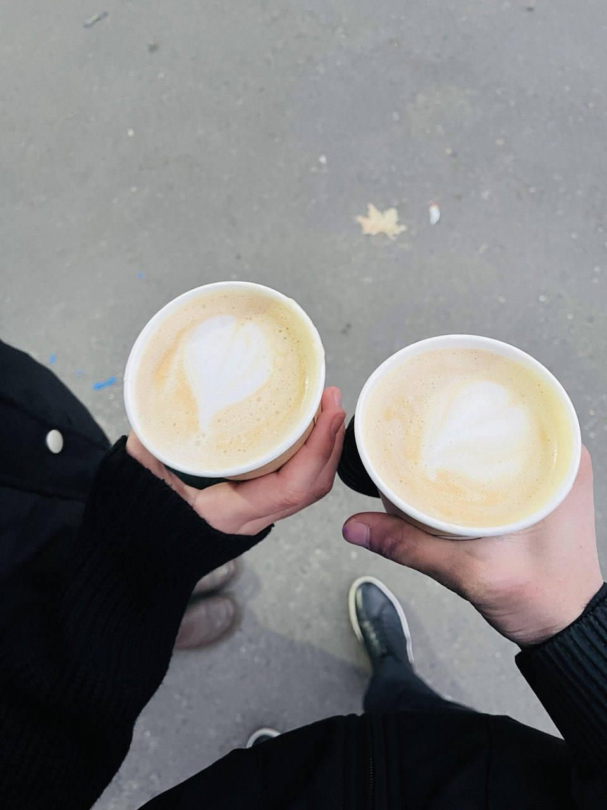

❤️
Shunchaki senga shularni aytmoqchiman...
Oradan qancha vaqt otmasin, ayrim xotiralar baribir o'sha kunligacha qolarkan.
Oradan qancha vaqt otmasin, ayrim xotiralar baribir o'sha kunligacha qolarkan.
Bir paytlar shu kunlarni
birga o'tkazardik.
Birga kulganimiz,
Stamatolgindan peshkom qaytib kelganimiz.
Ingliz tili kursiga dep chiqib korishganlarimiz.
oddiygina birga bo'lganimiz
ham men uchun juda qadrli edi.
Vaqt o'tdi...
hayotimiz o'zgardi.
Balki o'sha kunlarga
qayta olmasmiz.
Lekin men u kunlarni
hech qachon yomon xotira
deb eslamayman. ❤️🩹

Bilaman bu imkonsiz bolsa ham
aytgim keldi...
Lekin tug'ilgan kuningda
yuragimdagi bu gapni
yashirgim kelmadi.
Bu hech nimani xal qilmedi shunchaki haliyam yuraginda oz bolsayam o'rnim bormi bilmoqchiman...
Bu shunchaki soxta "HA" bo'lgani bilan meni
qanchalik xursandligimi bilganingda edi.
Oldingi kunlarimizni
qaytara olmaymiz.
Lekin birga o'tgan kunlarimiz
va sendan qolgan xotiralar
men uchun doim qadrli
bo'lib qoladi.
Bugun sening tug‘ilgan kuning.
Men esa bu kunni shunchaki o‘tib ketishini xohlamadim.
Chunki ba’zi insonlarning tug‘ilgan kuni — ular
hayotingda bo‘lganini yana bir bor eslatadigan kun.
Yangi yoshing chiroyli voqealarga boy bo‘lsin, Janonam. ❤️
Har doim baxtli bo'l. ❤️